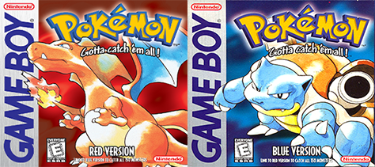

Pokemon Gen 1
The first generation of Pokémon games, known among older fans as the color generation or the chromatic generation due to the names of the versions released, is the initial set of four Pokémon games released.
Beginning with Pokémon Red and Green, and later joined by third version Blue and the special edition Yellow in Japan, the Generation I games were developed beginning as early as 1990 from an idea that Satoshi Tajiri had thought of and pitched to Nintendo with the help of Shigeru Miyamoto. The inspiration for many of the key mechanics introduced in this generation came from Tajiri's childhood interest in bug collecting, with the trading system between two Game Boys being thought of when he imagined a caterpillar crawling across the Game Link Cable between two systems.
This generation was localized into English, with initial attempts to keep the Pocket Monsters name for international use blocked due to the Monster in My Pocket franchise leading to the release as "Pokémon". Further alterations made in the localization included the combination of Red, Green, and Blue into the English versions of Pokémon Red and Blue, using Red and Green's wild Pokémon encounter lists but Blue's slightly improved graphics. The simultaneous release of the games and anime led to an almost-overnight surge in popularity, cementing the Pokémon franchise firmly as a Nintendo mainstay alongside Super Mario and The Legend of Zelda.